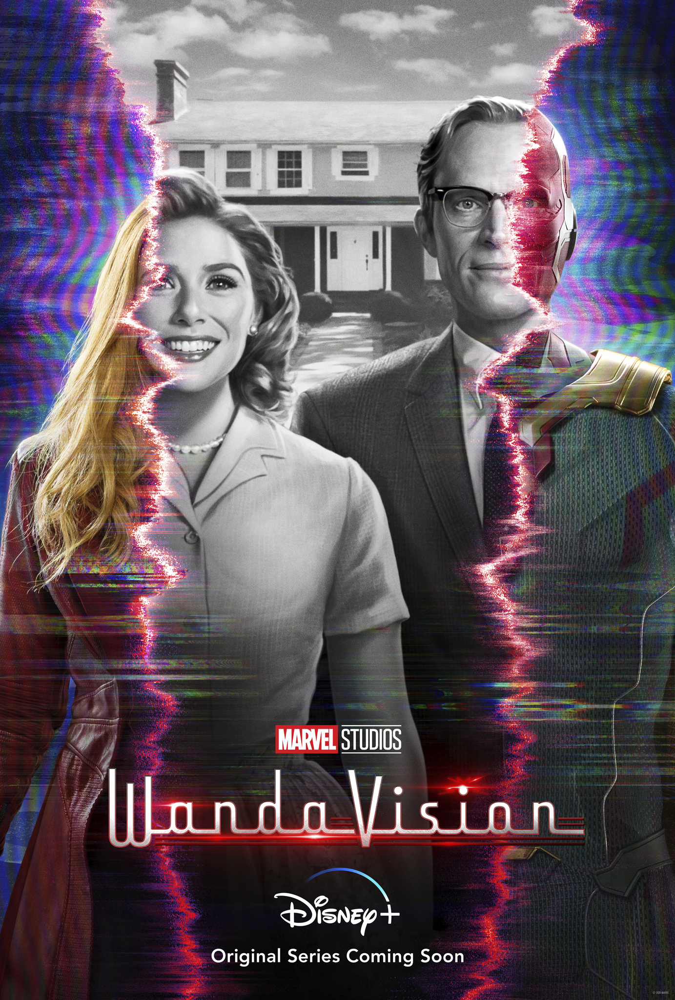
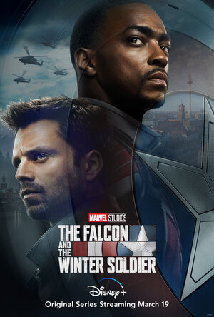
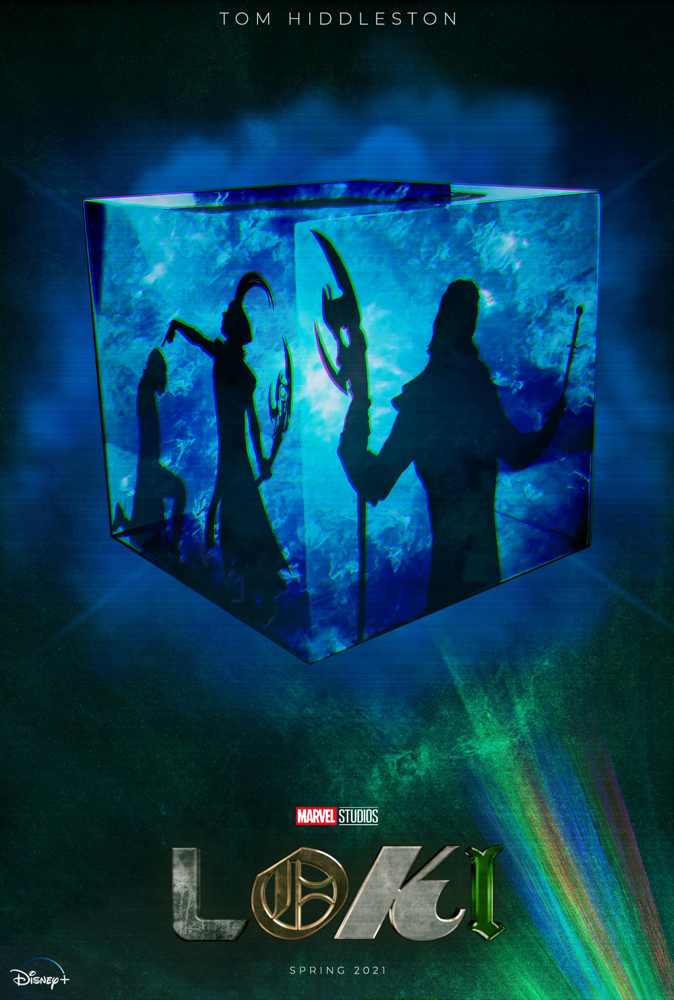

"Marvel Studios presents a visionary new age of television"
Wanda and Vision are newlyweds living in the idyllic town of Westview. At first, the life of the heroes seems to them the ideal of pono, but gradually they realize that it is not so.

Sam Wilson will try on the costume of the new Captain America and try to cope with the mission assigned to him by Steve Rogers. Bucky, in turn, is ready to become a part of society again and get to know everything that the modern world offers.
Read More Original Source
Loki falls into the mysterious organization "Time Change Management" after he stole the Tesseract, and travels through time, changing history.
Read More Original Source